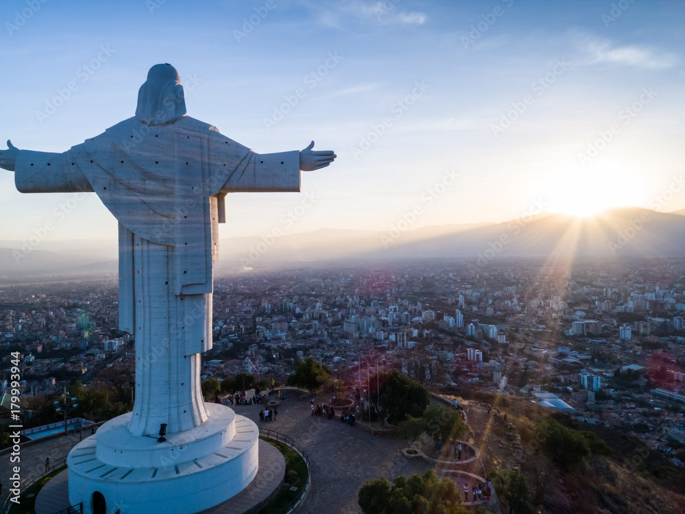
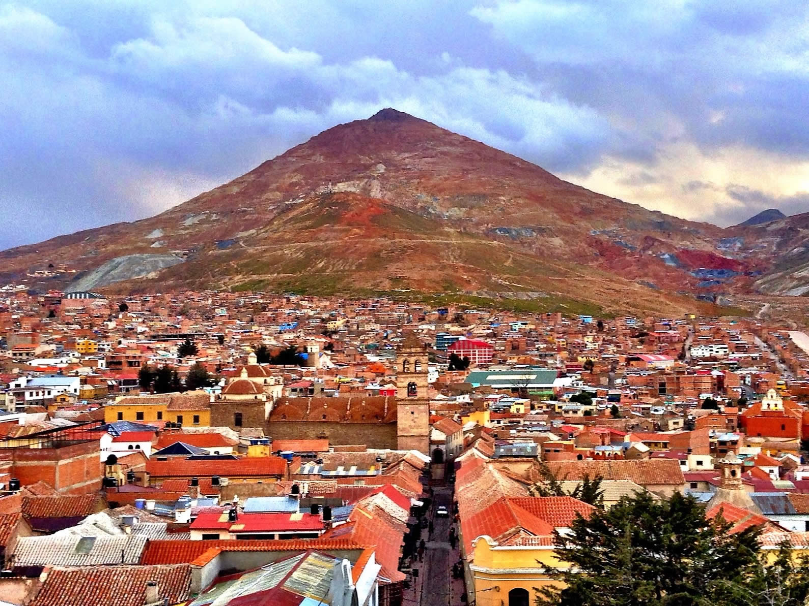

Departamentos de Bolivia
Beni es un departamento situado en la región amazónica de
Bolivia, conocido
por su exuberante biodiversidad y sus vastas llanuras. La ciudad de Trinidad, su capital, es un punto de
partida común para explorar la selva amazónica y sus numerosos ríos y lagos. Beni es el hogar de varias
comunidades indígenas y es un lugar ideal para los amantes de la naturaleza y la aventura.
Conocida como la "Ciudad Jardín", Cochabamba es un
departamento situado en el valle central de Bolivia. Su clima templado, sus extensos campos agrícolas y
su gente amable hacen de Cochabamba un destino popular tanto para turistas como para residentes. Además,
es famosa por su gastronomía diversa y deliciosa, especialmente el denominado "Pique Macho" .
Chuquisaca es el departamento donde se encuentra la histórica
ciudad de Sucre,
la capital constitucional de Bolivia y un importante centro cultural y educativo. Sucre es conocida por
sus encantadoras plazas, su arquitectura colonial bien conservada y su ambiente tranquilo. Además, es el
lugar donde se firmó la declaración de independencia de Bolivia en 1825.
La Paz, la capital administrativa de Bolivia, es una ciudad
enclavada en las montañas andinas a una altitud impresionante. Es famosa por su vibrante vida cultural y
su mercado callejero, el mercado de las Brujas, donde los visitantes pueden encontrar una variedad de
productos tradicionales y esotéricos. Además, La Paz alberga el famoso teleférico que conecta la ciudad
con El Alto, una de las ciudades más altas del mundo.
Este departamento es famoso por ser la sede del Carnaval de Oruro,
uno de los festivales más grandes y coloridos de Bolivia. La ciudad de Oruro, su capital, es un centro
cultural importante donde se mezclan las tradiciones indígenas con la influencia colonial española.
Además, Oruro es conocido por sus ricos yacimientos minerales.
El departamento más septentrional de Bolivia, Pando, también
se encuentra en
la región amazónica del país. Con una densa selva tropical y una población relativamente pequeña, Pando
es conocido por su naturaleza virgen y su biodiversidad única. Cobija, su capital, es una ciudad
tranquila rodeada de belleza natural, donde los visitantes pueden disfrutar de actividades al aire libre
y explorar la vida silvestre.
Reconocido por su rica historia minera, Potosí es el hogar
del Cerro Rico, una
montaña que alguna vez fue la fuente principal de plata para el Imperio Español. La ciudad de Potosí,
declarada Patrimonio de la Humanidad por la UNESCO, es un testimonio vivo del pasado colonial de
Bolivia, con sus impresionantes iglesias y arquitectura colonial.
Situado en el sur de Bolivia, Tarija es conocido por ser el
principal
productor de vino del país. Con un clima mediterráneo y paisajes pintorescos de viñedos y valles, Tarija
atrae a visitantes con su tranquilidad y su deliciosa gastronomía. La ciudad de Tarija, su capital, es
un destino popular para los amantes del vino y la buena comida.
Ubicado en la región oriental de Bolivia, Santa Cruz es el
departamento más grande y poblado del país. Con un clima tropical y una economía basada en la
agricultura y la industria, Santa Cruz es conocido por su energía comercial y su diversidad étnica. La
ciudad de Santa Cruz de la Sierra, su capital, es un importante centro urbano y comercial en constante
crecimiento.